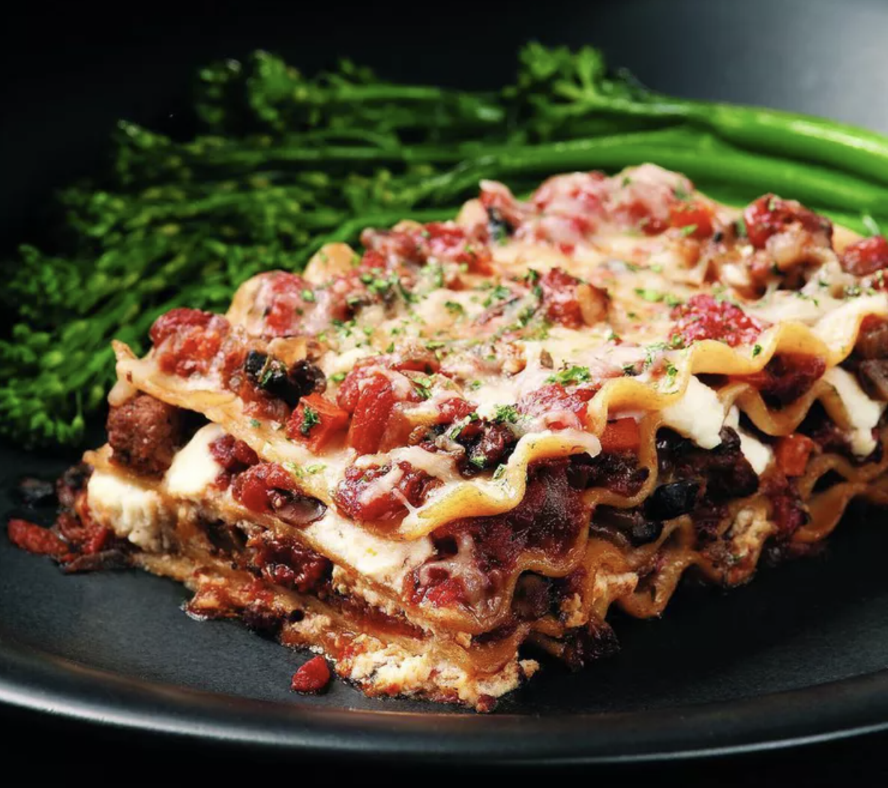

Lasagna Recipe
Here's an old-fashioned meat-and-cheese lasagna made lighter.
Whole-wheat lasagna noodles taste great in this recipe, plus they help boost the fiber to 9 grams, which is more than a third of the recommended daily intake and especially good news for a healthy heart.
Ingredients
- 9 lasagna noodles
- 1 tablespoon olive oil
- 1 pound ground beef
- 1 diced onion
- 1 can crushed tomatoes
- 1 package whole milk ricotta
- 3.5 cups shredded mozzarella
- 1 egg
- 0.25 cup freshly grated Parmesan
- 1 tablespoon Italian seasoning
- salt and pepper to taste
Instructions
- Preheat oven to 350 degress F.
- In a large pot, boil salted water and cook lasagna noodles.
- Heat olive oil in a large cast iron skillet over medium heat and cook ground beef and onion.
- In a medium bowl, combine ricotta, mozzarella and egg; set aside.
- Spread 1 cup tomato mixture onto the bottom of a 9x13 baking dish, top with 3 lasgna noodles.
- Layer with 0.5 cup of the ricotta cheese mixture and 1 cup of mozzarella cheese.
- Repeat steps 5 and 6 with a scond layer.
- Top with remaining noodles, tomato mixture, 1 cup mozzarella cheese and Parmesan.
- Place into oven and bake for 35-45 minutes, or until bubbling.
- Let cool for 10-15 minutes and serve.